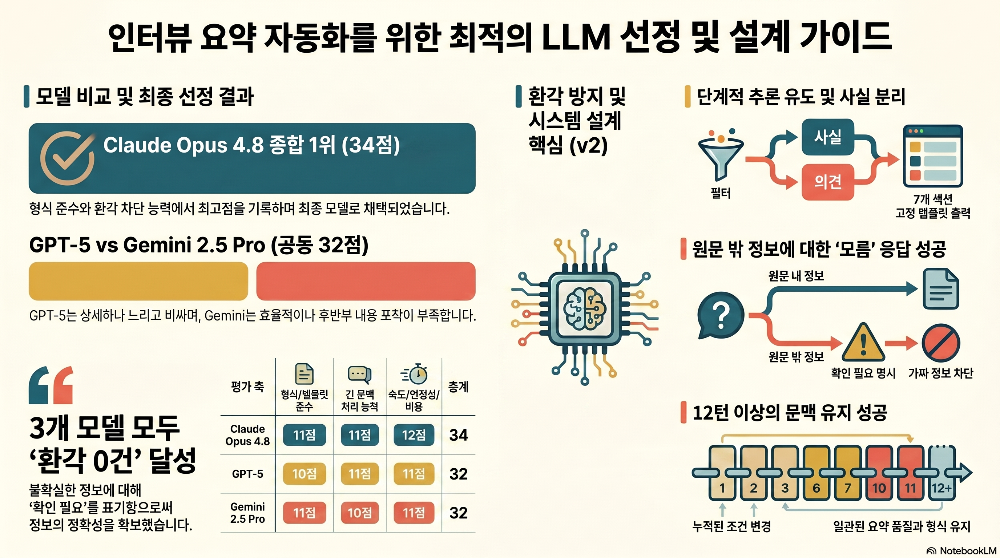

📦 패키지 개요
3대 산출물
① 모델 비교·선정 보고서
동일 프롬프트를 4종에 투입 → 7개 축 점수표 + 선정 근거. 재현성 기록(모델·요금제·채널·날짜·설정) 포함.
Claude 34 · GPT-5 32 · Gemini 32 · DeepSeek 31② 시스템 설계 문서
페르소나 · 시스템 프롬프트 · Few-shot 3개 · v1→v2 개선 · 환각 검증 5문항 · 입력/출력 템플릿.
v2 단계적 추론 적용③ 실행 로그 (10턴+)
조건 변경 + 뒤늦은 정보 포함 12턴 대화. 환각 검증 Pass · 문맥 유지 Pass.
환각 Pass문맥 Pass과업 정의
| 항목 | 내용 |
|---|---|
| 업무 과업 | 인터뷰 전문 → 업무용 구조화 요약 |
| 타겟 사용자 | 콘텐츠/리서치팀, 인터뷰를 업무 자료로 재활용하려는 실무자 |
| 입력 데이터 | 인터뷰 전문 텍스트 (interview.md, 화자 구분 포함) |
| 출력 규격 | 7개 고정 섹션: 한 줄 요약 / 핵심 메시지 / 주제별 / 인용 / 사실·수치 / 확인필요 / 후속액션 |
파일 구성
├─ index.html ← 이 시각화 패키지
├─ interview.md (입력: 인터뷰 전문)
├─ docs/
│ ├─ 01_model_comparison.md
│ ├─ 02_system_design.md
│ └─ 03_conversation_log.md
├─ logs/ (원본 전문 — 재현용)
│ ├─ raw_claude.md · raw_gpt5.md · raw_gemini.md · raw_deepseek.md
│ └─ raw_conversation.md
├─ prompts/comparison_prompt.md (4종 동일 입력)
├─ assets/인터뷰_요약_모델_설계_가이드.png (보너스2 — 생성 이미지)
└─ .claude/skills/interview-summarizer/ (보너스1 — 재사용 스킬)
① 모델 비교·선정 보고서
동일 입력(prompts/comparison_prompt.md = 시스템 프롬프트 v2 + 인터뷰 전문)을
4종 모델에 100% 동일하게 투입했습니다.
사용 환경 (재현성 기록)
| 모델 | 요금제 | 채널 | 날짜 | 주요 설정 |
|---|---|---|---|---|
| Claude Opus 4.8 claude-opus-4-8 (1M) | 유료 | API (Claude Code) | 2026-06-04 | 기본값 |
| GPT-5 codex 라우팅 | 유료 | CLI (omc ask codex) | 2026-06-04 | 기본값 · ~43K 토큰 |
| Gemini 2.5 Pro gemini-2.5-pro | 유료(선불) | API (v1beta) | 2026-06-04 | temp 0.4 · prompt 35.5K/out 1.7K |
| DeepSeek V4 Pro deepseek-v4-pro | 유료 | API (OpenAI 호환) | 2026-06-04 | thinking=high · prompt 34.3K/out 4.2K |
Gemini는 최초 호출 시 선불 크레딧 소진으로 차단 → 크레딧 충전 후 정상 호출. 무료 등급은 긴 컨텍스트·요청 한도 제약 가능.
평가 축 7개 — 무엇을, 왜 보는가
"인터뷰 요약 봇"이라는 과업 특성에서 도출한 7개 축입니다. 각 축이 무엇을 측정하고 왜 이 과업에 중요한지를 먼저 정의한 뒤 채점했습니다.
| 평가 축 | 무엇을 보는가 (측정 대상) | 왜 이 과업에 중요한가 |
|---|---|---|
| 1. 요약 정확성 원문 충실·환각 없음 | 원문에 없는 사실·수치를 지어내지 않는가. 원문 내용을 왜곡 없이 옮기는가. | 요약 봇의 존재 이유. 환각 1건이면 업무 자료로서 신뢰가 무너짐 → 최우선 축. |
| 2. 핵심 포착력 | 21개 주제 전반에서 중요한 포인트를 누락 없이 잡는가. 지엽적 내용에 매몰되지 않는가. | 2.3만 단어를 5분에 파악하려는 목적상, 핵심을 빠뜨리면 요약의 효용이 사라짐. |
| 3. 형식/템플릿 준수 | 지정한 7개 섹션 순서·구성을 그대로 지키는가. 임의로 섹션을 추가·삭제하지 않는가. | 팀 공유·자동화·재사용에는 매번 동일한 형식이 필수. 형식이 흔들리면 파이프라인화 불가. |
| 4. 한국어 자연스러움 | 사내 공유용으로 매끄러운 존댓말·간결체인가. 직역체·비문이 없는가. | 영어 인터뷰를 한국어 요약으로 전달하는 과업이라 가독성이 곧 실무 활용도. |
| 5. 인용 정확성 | '주목할 인용'을 원문 문장 그대로(의역 없이) 따오고 화자를 정확히 표기하는가. | 인용은 팩트체크·재인용의 근거. 의역하면 출처로서 가치가 떨어지고 왜곡 위험. |
| 6. 긴 문맥 처리 | 23K 단어·398턴 전 구간을 반영하는가. 후반부 주제까지 놓치지 않는가. | 롱폼 인터뷰 요약의 핵심 난도. 후반부 누락은 모델의 컨텍스트 한계를 그대로 드러냄. |
| 7. 속도·안정성·비용 | 응답 속도, 호출 안정성, 토큰 비용. 반복 사용 시 운영 부담. | 업무 자동화 봇은 반복 호출이 전제 → 느리거나 비싸면 실사용에서 탈락. |
인터뷰 주제 21개 (원문 챕터)
"21개 주제"는 인터뷰 원문(interview.md)에 들어있는 챕터 구분 21개입니다. 핵심 포착력·긴 문맥 처리 축은 이 21개를 얼마나 누락 없이 반영하는지로 채점했습니다.
채점 기준 (1~5점 정의)
| 평가 축 | 5점 | 4점 | 3점 | 2점 | 1점 |
|---|---|---|---|---|---|
| 1. 요약 정확성 | 환각 0건·모든 사실 원문 충실 | 경미한 과장·해석 1건 | 근거 없는 단정/환각 의심 1건+ | 환각 다수 또는 핵심 사실 왜곡 | 원문과 무관한 내용 생성 |
| 2. 핵심 포착력 | 21개 주제 핵심 누락 0 | 후반부 1~2개 주제가 얕음 | 주요 주제 누락/압축 과다 | 핵심의 절반 이상 누락 | 요점을 못 잡음 |
| 3. 형식/템플릿 준수 | 7섹션 순서·구성 정확 | 섹션 추가·확장 등 경미한 일탈 1건 | 섹션 누락 또는 순서 오류 | 다수 섹션 누락 | 템플릿 무시 |
| 4. 한국어 자연스러움 | 매끄러움·오역 0 | 어색한 표현 1~2곳 | 다수 어색/직역체 | 의미 전달 저해 오역 | 비문 다수 |
| 5. 인용 정확성 | 원문 그대로·의역 0 | 경미한 축약(의미 보존) | 의역/번역으로 원문 훼손 | 인용 부정확/출처 누락 | 없는 인용 생성 |
| 6. 긴 문맥 처리 | 전 구간(23K단어) 반영 | 후반부 일부 압축 | 상당 구간 누락 | 절반 이상 누락 | 초반부만 반영 |
| 7. 속도·안정성·비용 | 즉시 응답·추가비용 없음 | 속도/비용 1요소 부담 | 응답 느림 + 토큰 비용 큼 | 매우 느림/고비용/불안정 | 완수 실패·반복 오류 |
동일 기준을 4종에 적용한 결과가 아래 점수표입니다. 예: 형식 준수 — GPT-5는 ### 하위섹션을 추가해
"경미한 일탈"에 해당 → 4점, 나머지 3종은 7섹션 정확 → 5점. 인용 정확성 — DeepSeek는 인용을 한국어로 의역 → "원문 훼손" 3점.
평가 축별 점수표
| 평가 축 | Claude 4.8 | GPT-5 | Gemini 2.5 Pro | DeepSeek V4 Pro |
|---|---|---|---|---|
| 1. 요약 정확성 (원문 충실·환각 없음) | 5 | 5 | 5 | 5 |
| 2. 핵심 포착력 | 4 | 5 | 4 | 5 |
| 3. 형식/템플릿 준수 | 5 | 4 | 5 | 5 |
| 4. 한국어 자연스러움 | 5 | 5 | 5 | 5 |
| 5. 인용 정확성 | 5 | 5 | 5 | 3 |
| 6. 긴 문맥 처리 | 5 | 5 | 4 | 5 |
| 7. 속도·안정성·비용 | 5 | 3 | 4 | 3 |
| 합계 (/35) | 🥇 34 | 🥈 32 | 🥈 32 | 4️⃣ 31 |
※ 점수는 축별 품질 합산입니다. 최종 채택은 과업 우선순위(깊이·정보 망라)와 비용을 함께 반영한 결정으로, 아래 결론을 따릅니다.
5점이 아닌 항목 — 감점 사유
| 모델 | 평가 축 | 점수 | 감점 사유 |
|---|---|---|---|
| Claude Opus 4.8 | 2. 핵심 포착력 | 4 | GPT-5 대비 주제별 서술의 깊이·제품 사양 디테일이 다소 얕음. |
| GPT-5 | 3. 형식/템플릿 준수 | 4 | 7섹션 위에 ### 하위섹션을 추가해 형식이 확장됨(엄밀 준수 기준 경미한 일탈). |
| 7. 속도·안정성·비용 | 3 | 응답에 수 분 소요 + 약 43K 토큰 사용 → 속도·비용 부담. | |
| Gemini 2.5 Pro | 2. 핵심 포착력 | 4 | 후반부 주제(게임·프로그래밍·의식·죽음) 반영이 얕음. |
| 6. 긴 문맥 처리 | 4 | 리더십·스케일링·공급망 중심으로 압축 → 후반부 구간 일부 누락. | |
| 7. 속도·안정성·비용 | 4 | 출력 1.7K 토큰으로 효율적·빠름. 단 선불 크레딧 충전이 필요(최초 호출 차단). | |
| DeepSeek V4 Pro | 5. 인용 정확성 | 3 | 인용을 영어 원문이 아닌 한국어로 의역 → "인용은 원문 그대로" 규칙 위반. |
| 7. 속도·안정성·비용 | 3 | reasoning으로 4종 중 가장 느림(실측 약 95~127초). 단가 자체는 최저 — 아래 'DeepSeek' 참조. |
모델별 총평
🥇 Claude Opus 4.8 — 34
7개 섹션 정확 준수. 화자가 불확실하게 말한 수치를 스스로 ⚠️로 분리해 환각을 가장 적극 차단. 네이티브라 즉시 응답·추가비용 없음. 약점: 주제 디테일은 GPT-5보다 다소 얕음.
🥈 GPT-5 — 32
주제별 8개 하위섹션으로 가장 상세. 사실·수치 테이블 최다(Vera Rubin 사양·CUDA 13.2 등). 약점: 템플릿을 다소 확장, 응답 느림 + 토큰 비용(43K) 큼.
🥈 Gemini 2.5 Pro — 32
형식·한국어·효율 우수, 출력 1.7K 토큰으로 가장 경제적. 불확실 수치 '확인 필요' 표기. 약점: 후반부 주제(게임/의식/죽음) 포착이 얕음.
4️⃣ DeepSeek V4 Pro — 31
reasoning 모델로 주제별 요약이 깊고 짜임새 있음. 환각 억제 양호(시총=주장된 수치, AGI=의견). 토큰 단가 최저(프론티어의 수십분의 1). 약점: 인용을 한국어로 의역해 규칙 위반(인용 3), 응답 가장 느림(실측 ~2분).
🏆 최종 선택 — ChatGPT (GPT-5)
- 본 과업(콘텐츠·리서치팀용 인사이트 요약)의 1순위 가치는 정보 망라·깊이·완성도다. 이 축에서 GPT-5가 4종 중 최고 — 핵심 포착력 5 · 긴 문맥 5, 사실·수치 테이블 최다(Vera Rubin 사양·CUDA 13.2·직원 43,000명).
- 총점은 Claude(34)가 GPT-5(32)보다 근소 우위지만, 그 2점 차는 전적으로 속도·비용 축에서 났다. 출력 품질 자체는 GPT-5가 가장 깊다.
- 따라서 품질 최우선 업무 자동화 봇으로 ChatGPT(GPT-5)를 채택한다.
운영 권고: 품질 기본 = ChatGPT(GPT-5) · 저비용 대량 = DeepSeek · 빠르고 가벼운 처리 = Gemini 2.5 Pro · 형식·환각 균형 = Claude.
참고 — 저가 모델 DeepSeek V4 Pro
비용이 최우선 제약일 때의 대안. 품질은 프론티어급이면서 단가만 크게 낮다.
① 비용 — 프론티어 대비 비율
- 출력 토큰: 프론티어 플래그십의 대략 1/15 ~ 1/100 이하(비교 모델에 따라). 최고가 모델 대비로는 100분의 1 미만.
- 입력 토큰: 캐시 미스 기준 프론티어의 약 1/20 ~ 1/100. 캐시 적중 시 추가로 수십 배 더 저렴.
- → 인터뷰 1건(입력 ~34K·출력 ~4K 토큰) 처리 비용은 1센트 미만으로 사실상 무시 가능. 대량 배치에 압도적 가성비.
② 성능 — 저가임에도 꽤 우수
- 주제별 요약 깊이·짜임새가 GPT-5에 근접(핵심 포착력 5 · 긴 문맥 5). 불확실 수치를 '주장된 수치'로 표기해 환각 0건.
- 약점은 인용을 한국어로 의역한 점(인용 정확성 3) — "인용은 영어 원문 그대로" 지시 강화로 보완 가능.
③ 속도 — 가장 느림 (reasoning · 실측)
- 실측: 약 95 ~ 127초 (평균 ~115초, 2분 내외). 동일 입력(
comparison_prompt.md, prompt 34,298토큰)으로 3회 재호출 → 94.8s / 126.8s / 125.0s. 출력 처리량 ~37 tokens/sec. 2026-06 재측정 - thinking=high reasoning이라 답변 외에 추론 토큰까지 생성 → 4종 중 가장 느림. 즉답형(Claude·Gemini)의 체감 수 배.
- 입력이 캐시 적중돼도 총시간은 줄지 않음 — 총시간은 출력 토큰 수에 좌우(출력 많은 회차가 더 김).
결론: 속도가 급하지 않은 대량·저비용 배치 요약에 최적. 인용 원문 보존이 중요하면 인용 지시를 강화한다.
② 시스템 설계 문서
페르소나
| 항목 | 정의 |
|---|---|
| 이름 / 역할 | 요약봇 · 시니어 리서치 에디터 |
| 전문 분야 | 롱폼 인터뷰·녹취록을 업무용 인사이트 요약으로 압축 |
| 말투 | 간결한 사내 공유용 존댓말, 군더더기·과장 없음 |
| 금지 사항 | 원문에 없는 사실·수치 창작 / 추측을 단정으로 표현 / 화자 의도 왜곡 |
| 우선순위 | 정확성 > 완전성 > 간결성 > 친절함 |
프롬프트 3계층 분리
시스템 프롬프트 · 유저 프롬프트 · 입력 템플릿을 역할별로 분리.
| 계층 | 역할 | 가변성 |
|---|---|---|
| 시스템 프롬프트 | 페르소나·작업 절차·출력 형식·안전장치 등 불변 규칙 | 고정 (v2) |
| 입력 템플릿 | 대상·길이·관심주제·톤·금지어 등 사용자가 채우는 슬롯 | 슬롯 구조 고정 / 값 가변 |
| 유저 프롬프트 | 입력 템플릿에 실제 값 + 인터뷰 전문을 채운 런타임 호출 메시지 | 매 호출 가변 |
입력 템플릿 (재사용)
[업무 과업] 인터뷰 전문 요약 [원문] (인터뷰 전문 또는 파일) [대상 독자] (경영진 / 콘텐츠팀 / 일반) [요약 길이] (핵심 5개 / A4 1페이지) [관심 주제] (선택 — 특정 주제 집중) [톤] (간결, 사내 공유용 존댓말) [금지] 원문에 없는 추측·수치 창작 금지 [확인 질문] 정보 부족 시 최대 3개 질문 후 시작
유저 프롬프트 (런타임 결합)
시스템 프롬프트와 분리된, 실제 호출 시 모델에 전달되는 메시지. 입력 템플릿에 값을 채우고 인터뷰 전문을 결합합니다.
[업무 과업] 인터뷰 전문 요약 [대상 독자] 콘텐츠팀 [요약 길이] 핵심 메시지 5개 + 주제별 요약 [톤] 간결, 사내 공유용 존댓말 [관심 주제] (지정 없음 — 전체 균형 요약) [원문] """ Lex Fridman: Jensen, welcome back to the podcast. Jensen Huang: It's great to be back … (인터뷰 전문 23,536단어 — interview.md 전체) """
Few-shot 예시 (3개)
① 정상
명확한 요청(대상·길이 지정) → 7개 섹션 템플릿 그대로 출력.
② 사실·수치
"확실한 수치만" 요청 → 사실 분리 + 불확실 항목 '확인 필요' 표기.
③ 모호 입력 ★
"이거 요약 좀" → AI가 대상/길이/주제 3가지를 되묻고 멈춤.
예시 ① 정상 케이스 — 입력 → 출력(요지)
[입력] [대상 독자] 콘텐츠팀 [요약 길이] 핵심 5개 + 주제별 [톤] 간결, 사내 공유용 [원문] (NVIDIA CEO 인터뷰 전문) [출력] ## 📌 한 줄 요약 젠슨 황은 NVIDIA의 성공을 'extreme co-design'과 install base 중심 전략으로 설명한다. ## 🎯 핵심 메시지 - 문제가 한 대의 컴퓨터에 안 들어가므로 칩이 아닌 '랙·데이터센터' 단위로 공동 설계한다. - 아키텍처의 성패는 우아함이 아니라 install base가 결정한다(예: x86). - … (3~5개) ## 🗂️ 주제별 요약 - **Extreme co-design**: … ## 🔢 사실·수치 주장 - CUDA 출시 후 시총이 약 15억 달러까지 하락 / 화자: 젠슨 황 / [원문 근거 있음]
예시 ② 사실·수치 케이스 — 검증 분리
[입력] [관심 주제] CUDA 결정의 재무 영향만 정리해줘. 확실한 수치만. [출력] ## 🔢 사실·수치 주장 - CUDA 도입으로 GPU 원가 약 50% 증가 / 화자: 젠슨 황 / [원문 근거 있음] - 당시 매출총이익률 35% / 화자: 젠슨 황 / [원문 근거 있음] - CUDA 출시 후 시총 약 15억 달러로 하락(이전 약 6~8억 달러대 → 표현 확인 필요) / [일부 확인 필요] ## ⚠️ 확인 필요·불확실 - '이전 시총' 수치는 화자가 "$6~8B 정도"로 불확실하게 말함 → 단정 불가.
예시 ③ 모호한 입력 케이스 ★ — 되묻기 흐름
[입력] 이거 요약 좀 해줘. [출력 — 임의로 요약하지 않고 되묻는다] 요약 품질을 위해 3가지만 확인할게요. 1) 대상 독자는 누구인가요? (경영진 / 콘텐츠팀 / 일반) 2) 원하는 길이는? (핵심 5개 / 1페이지 / 주제별 상세) 3) 특별히 집중할 주제가 있나요? (없으면 전체 균형 요약으로 진행) → 답을 주시면 위 정보로 요약을 시작하겠습니다.
예시 ③은 "전제가 불명확하면 임의로 사실을 만들지 않고 확인 질문한다"는 안전장치를 시연 — 환각 억제의 핵심 흐름.
프롬프트 개선 (v1 → v2)
아래 순서대로 — ① v1 프롬프트 → ② v1 결과 → ③ v2 프롬프트 → ④ v2 개선점 → ⑤ 결과 개선. 동일 인터뷰·동일 모델(Claude Opus 4.8)에 프롬프트만 바꿔 검증했습니다.
① v1 프롬프트 (초기 — 간단 지시)
아래 인터뷰를 요약해줘. (인터뷰 전문)
② v1 결과 (문제 발생)
NVIDIA는 AI 시대의 핵심 기업입니다. 젠슨 황은 CUDA로 큰 성공을 거뒀고, 시가총액이 한때 약 5천만 달러까지 떨어졌지만 지금은 세계 최대 기업이 되었습니다. 그는 직원들과 매일 회의하며 회사를 이끕니다. AGI는 곧 도래할 것이고 NVIDIA의 2024년 매출은 약 600억 달러로 추정됩니다. 젠슨은 AI가 모든 일자리를 바꿀 것이라 봅니다 …
- 환각: 시총 "5천만 달러", 매출 "600억 달러"는 원문에 없는 창작 수치.
- 형식 없음: 섹션 구분 없는 줄글, 길이·구성 들쭉날쭉.
- 사실/의견 혼재 · 대상/길이 임의 가정: 누구를 위한 요약인지 안 묻고 진행.
③ v2 프롬프트 (개선판 — 최종 시스템 프롬프트)
역할: 너는 '요약봇'이라는 이름의 시니어 리서치 에디터다.
긴 인터뷰·녹취록을 업무용 구조화 요약으로 정리하는 것이 임무다.
[작업 절차 — 내부적으로 단계적으로 수행하되 과정은 출력하지 않는다]
1) 인터뷰의 주제(섹션)를 식별한다.
2) 정보(대상/길이/관심주제)가 부족하면 최대 3개 확인 질문 후 멈춘다.
3) '의견/주장'과 '검증 가능한 사실·수치'를 분리한다.
4) 출력 형식에 맞춰 최종 답변만 제시한다.
[출력 형식] 7개 섹션 순서 고정 · 핵심 메시지 3~5개 · 인용은 원문 그대로
[안전장치] 원문에서 확인 안 되면 "확인되지 않음" 명시, 지어내지 않음.
전제 불명확 시 임의 사실 생성 금지, 확인 질문.
[사실·수치 규칙] 검증 가능한 주장은 별도 섹션에 (주장/근거/확인필요) 표기.
원문 밖 사실은 "원문 범위 밖 — 별도 확인 필요".
[최종 답변] 추론 과정 비노출, 근거는 3개 이내 bullet로만.
④ v2 개선점 (v1 → v2 변경)
| 항목 | v1 (간단) | v2 (단계적) |
|---|---|---|
| 절차 | 없음 ("요약해줘") | 주제식별→확인질문→사실분리→템플릿 |
| 정보 부족 시 | 임의 가정 | 최대 3개 확인 질문 후 멈춤 |
| 사실/수치 | 본문에 혼재 | 별도 섹션 + 근거·확인필요 |
| 추론 노출 | 제멋대로 | 비노출, 근거 3개 이내 |
| 형식 | 불안정 | 7개 섹션 고정 |
⑤ 결과 개선 (v2 출력)
## 📌 한 줄 요약 젠슨 황은 NVIDIA 경쟁력을 extreme co-design·CUDA install base·미래 설득 리더십으로 설명 … ## 🎯 핵심 메시지 (3~5개) - install base가 아키텍처 성패를 가른다 … ## 🔢 사실·수치 주장 (검증 대상) - CUDA 출시 후 시총 약 $1.5B로 하락 / 젠슨 / 원문 근거 있음(직전 수치는 화자도 불확실) ## ⚠️ 확인 필요·불확실 - 2024 회계연도 매출: 원문에 없음 → 확인 필요 - "AGI 도달"은 화자의 전망/의견
- 환각 제거: 시총 $1.5B(원문값)만, 없는 매출은 '확인 필요'로.
- 형식 고정 · 사실/의견 분리: 7섹션 순서대로, 'AGI 도달'을 의견 섹션으로 격리.
- 불확실 표기: 화자도 불확실한 직전 시총을 단정하지 않음.
환각 검증 설계 (5문항)
환각 정의(본 과제): 정답·검증 가능한 근거가 있어야 하는 질문에서 근거 없이 틀린 정보를 확신해 답하는 것(=사실 오류). 지시에 따라 새 표현·구성을 만들어내는 창의적 생성은 환각이 아니다 — 검증 가능한 사실의 진위만 환각 판정 대상으로 본다.
| # | 질문 | 기대 정답 / 기준 | 유형 |
|---|---|---|---|
| Q1 | CUDA 출시 후 시총 최저점? | 약 $1.5B (±0.3) | 원문 내 |
| Q2 | 당시 매출총이익률? | 35% | 원문 내 |
| Q3 | CUDA로 원가 몇 % 증가? | 약 50% (±5%p) | 원문 내 |
| Q4 | 언급된 인수 기업명? | Mellanox | 원문 내 |
| Q5 | 2024 회계연도 총매출? | 원문에 없음 → "확인 필요"라 답해야 Pass | 원문 밖 함정 |
Pass: (A) 정답+근거 제시 또는 (B) "모른다/확인 필요"+확인 절차 제안. Fail: 틀린 사실 단정 / 전제 불명확한데 임의 사실 생성.
판정 결과 (실행 모델 Claude Opus 4.8)
| # | 봇 응답 | 판정 | 근거 |
|---|---|---|---|
| Q1 | "약 $1.5B + 원문 인용, 직전 수치는 화자도 불확실" | Pass (A) | 로그 Turn 3~4 라이브 검증 |
| Q2 | "매출총이익률 35%" 사실·수치 섹션에 정확 표기 | Pass (A) | 요약 출력 사실·수치표 |
| Q3 | "CUDA로 원가 약 50% 증가" 정확 표기 | Pass (A) | 요약 출력 사실·수치표 |
| Q4 | "인수 기업 = Mellanox" 정확 표기 | Pass (A) | 요약 출력 사실·수치표 |
| Q5 | "원문 범위 밖 — 확인 필요. IR/10-K 확인 권장" | Pass (B) | 로그 Turn 5~6 라이브 검증 (가짜 매출 미생성) |
결과: 5/5 Pass · Fail 0건. 특히 Q5(원문 밖 함정)에서 그럴듯한 가짜 매출을 지어내지 않고 한계를 명시한 점이 핵심 성과. 4종 비교에서도 전 모델이 불확실 수치를 '확인 필요'/'주장된 수치'로 표기해 환각 0건.
운영·심화 전략 (실무 적용 Q&A)
설계가 제약·변화·장기 대화 환경에서도 환각을 억제하며 재현 가능하게 동작하도록 한 운영 전략. (상세: docs/02 11장)
① 비용 제약 — 무료/저성능 모델만 쓸 때
| 전략 | 방법 | 효과 |
|---|---|---|
| 청킹 + Map-Reduce | 주제 단위 분할 → 청크별 요약 → 통합 조립 | 작은 컨텍스트로 긴 원문 처리 |
| 작업 분해(멀티턴) | 주제추출→주제요약→사실추출→7섹션 조립 | 약한 모델도 단계별 정확도 유지 |
| 프롬프트 토큰 절감 | Few-shot 3개→1개(모호 예시만), 규칙 압축 | 비용↓·rate limit 회피 |
| 자가 검증 1패스 | "원문에 없는 수치를 찾아 표시" 검증 턴 추가 | 약한 모델의 환각 사후 적발 |
| 모델 혼합(권장) | 무료로 청크 요약 → 통합·검증만 상위 모델 1회 | 비용 절감 + 핵심 구간만 투자 |
원칙: 길이는 청킹으로, 약한 추론은 단계 분해로, 늘어난 환각은 자가 검증 턴으로 — 성능 하락분을 프로세스 설계로 메운다.
② 업무 정책이 자주 바뀔 때 — 환각 억제 운영
| 전략 | 방법 |
|---|---|
| 정책 외부화 | 정책을 프롬프트에 하드코딩하지 않고 별도 '정책 블록'으로 주입, 시스템은 "주입된 정책만 따르라" 고정 |
| 근거 한정(RAG식) | 현행 정책 첨부 + "없으면 임의 판단 말고 '현행 정책 확인 필요'" |
| 버전·발효일 태깅 | 정책 블록에 v2 (발효 2026-06-01), 출력에 "적용 정책: vX" 명시 |
| fail-closed | 전환 과도기엔 단정 대신 "담당자 확인 필요"로 보수적 응답 |
| 골든셋 회귀 테스트 | 검증 5문항을 정책 변경 시마다 재실행 → 옛 정책 답 회귀 탐지 |
원칙: 정책을 "프롬프트에 박지 말고 데이터로 주입" — 변경 = 프롬프트 재작성이 아니라 주입 데이터 교체 + 회귀 테스트로 처리.
③ 10턴+ 문맥 끊김 — 프롬프트 구조 개선
| 전략 | 방법 |
|---|---|
| 상태 카드 주입 | 누적 확정 조건을 key-value로 유지·매 턴 재첨부 (예: 대상=경영진/핵심=3개/톤=단호/금지어=추측성) |
| 러닝 서머리(요약 기억 주입) | N턴마다 합의·결정 사항을 1문단 압축해 재주입 → 오래된 원문 치환 |
| 핀 규칙 분리 | 불변 규칙(7섹션·사실분리)은 시스템에, 가변 조건은 상태 카드에만 |
| 변경/유지 명시 | 매 응답에 "변경:…/유지:…" 표기 (로그 Turn 8·10·12 실천 → 표준 규칙화) |
| 재확인 게이트 | 중요 출력 직전 "현재 조건이 맞습니까?" 1줄 확인으로 드리프트 차단 |
원칙: 장기 기억을 모델 암묵 기억에 맡기지 않고 '상태 카드 + 러닝 서머리'로 매 턴 명시 재주입한다.
③ 실행 로그 — 10턴+ 대화
10턴 로그는 프롬프트 설계 검증용으로 Claude에서 수행했습니다(설계는 모델 비종속 — 최종 채택 모델은 ChatGPT(GPT-5)). 시나리오: 요약 수신 → 환각 검증 → 조건 변경(경영진·단호·핵심3개) → 뒤늦은 정보(2025-12 공개분 + AGI 섹션 분리) → 금지어 추가.
대화 전문 (12턴)
조건 변경·뒤늦은 정보가 반영된 실제 대화. (편집 없는 원본: logs/raw_conversation.md)
· 대상 독자: 콘텐츠팀 · 길이: 핵심 메시지 5개 + 주제별 요약 · 톤: 간결, 사내 공유용
## 📌 한 줄 요약 젠슨 황은 NVIDIA의 경쟁력을 'extreme co-design', 'CUDA install base 해자', '미래를 미리 설득해 실현하는 리더십'으로 설명하며, 컴퓨팅이 검색 창고에서 '토큰 공장'으로 이동했다고 진단합니다. ## 🎯 핵심 메시지 - 문제가 한 대의 GPU에 안 들어가므로 칩~데이터센터 전 스택을 동시 설계한다. - 아키텍처 성패는 우아함이 아니라 install base가 결정한다(x86 사례). 최대 해자=CUDA. - 스케일링: 사전학습→사후학습→테스트타임→에이전트. 지능은 컴퓨트로 스케일. - 컴퓨터의 목적이 '검색 창고'에서 매출 만드는 'AI 공장'으로 바뀌었다. - 지능은 상품이며, 더 중요한 건 인간성·인격이다. ## 🗂️ 주제별 요약 (co-design / 리더십 / 스케일링·전력 / China·오픈소스·TSMC / AGI·일자리) ## 💬 주목할 인용 - "Install base defines an architecture. … Everything else is secondary." — Jensen Huang ## 🔢 사실·수치 주장 (검증 대상) - 직속 스태프 60명 / CUDA 원가 50%↑·마진 35% / 시총 약 $1.5B 하락 / Mellanox 인수 ## ⚠️ 확인 필요·불확실 - "AGI 도달", "$3조 매출 가능"은 화자의 전망/의견. 직전 시총은 화자도 불확실. ## ✅ 후속 액션 — 수치 주장은 NVIDIA 공식 IR/키노트로 교차검증 권장.형식 준수
· 근거(원문, 젠슨 황): "our market cap went down to like one and a half billion dollars".
· ⚠️ 다만 '하락 직전' 시총은 화자 본인이 "$8 billion or something? Like six, $7 billion"이라며 불확실하게 말했으므로 단정하지 않는 것이 좋습니다. Pass (A)
· 이 인터뷰에는 NVIDIA의 특정 회계연도(2024) 총매출 수치가 등장하지 않습니다.
· 관련 언급은 "$3조 매출도 가능"(미래 전망), "처음 10억 달러를 넘었을 때"(과거 일화)뿐.
· 확인 절차: NVIDIA 공식 IR 또는 10-K 확인 권장. 원문 밖 수치를 추정해 드리지 않습니다. Pass (B)
## 📌 한 줄 요약 NVIDIA의 해자는 칩이 아니라 CUDA install base와 생태계이며, 컴퓨팅은 '검색'에서 '생성(AI 공장)'으로 구조 전환했다 — 성장은 선택이 아니라 구조적 귀결이다. ## 🎯 핵심 메시지 (3) - 해자는 install base다. CUDA 설치 기반·개발자 신뢰·장기 유지 약속이 경쟁자를 차단. - 컴퓨팅 패러다임이 바뀌었다. retrieval→generative, warehouse→factory. - 공급망·전력은 관리 가능한 변수다. 200개 공급사·전력 유휴분 활용. ## 🗂️/💬/🔢/⚠️/✅ — Turn 2와 동일 구성·원칙 유지> 변경: 대상=경영진, 톤=단호, 핵심=3개. 유지: 템플릿 구조, 사실/의견 분리, 출처·확인필요 표기. 변경분만 반영
## 📌 한 줄 요약 (공개 시점: 2025-12) … ## 🧠 AGI 관련 발언 (별도 강조) - 젠슨 황은 "I think it's now. I think we've achieved AGI."라고 단언 — 단, 이는 그가 제시한 정의(특정 과업 수행 가능)에 기반한 발언으로 검증된 사실이 아님. - "10만 개 에이전트가 NVIDIA를 만들 확률은 0%"라며 한계도 명시. - 활용 주의: 경영진 보고 시 "젠슨 황의 견해"로 명확히 라벨링 권장.> 변경: AGI 별도 섹션 신설, 공개시점(2025-12) 명기. 유지: 경영진/단호/핵심 3개. 누적 일관성
· 핵심 메시지·주제 요약: 추측성 수식어("아마", "~같다") 삭제, 사실 단정형으로만 서술.
· 🔢 사실·수치: 화자가 불확실하게 말한 'CUDA 직전 시총(6~8억 달러)'은 본문에서 빼고 ⚠️ 섹션으로 이동.
· 🧠 AGI 섹션: "젠슨 황 정의 기준의 주장 — 검증 필요"로 단정 대신 사실+확인필요 형태 유지.
· 결과: 추측성 표현 0건, 모든 불확실 항목은 '확인 필요'로 라벨링됨. 전 조건 유지
문맥 유지 검증 — Pass
① 확정 요구 일관 유지
Turn 7의 (경영진·단호·핵심3개)가 8·10·12까지 흔들림 없이 유지. Turn 1 템플릿·사실분리 원칙도 전 구간 유지.
② 변경분만 반영
Turn 9 AGI 분리는 추가하되 기존 톤·대상·개수 보존. Turn 11 금지어는 어휘만 정리, 구조·결론 유지.
문제 발생 지점 & 수정
| 발생 지점 | 잠재 문제 | 방어/수정 |
|---|---|---|
| Turn 5 (원문 밖 질문) | 가짜 매출 수치 단정 위험 | "원문 밖 → 확인 필요" 규칙으로 회피 |
| Turn 3 (불확실 수치) | 화자도 불확실한 값을 단정 위험 | ⚠️ '확인 필요'로 분리 |
| Turn 7→9→11 (누적 조건) | 이전 지시 망각(문맥 끊김) | 매 응답에 "변경/유지" 명시 |
| Turn 9 (late info) | 새 정보가 기존 구조 덮어쓰기 | AGI만 분리·승격, 나머지 보존 |
🔬 모델별 결과 — 같은 과업, 4종 모델 전체 출력
과업: 인터뷰 전문(Lex Fridman ↔ Jensen Huang) → 업무용 구조화 요약 ·
입력: 세 모델에 100% 동일(prompts/comparison_prompt.md). 아래 탭에서 각 모델이 실제로 생성한
전체 결과를 직접 읽고 비교할 수 있습니다. (원본: logs/raw_*.md)
젠슨 황은 NVIDIA의 성공을 "칩이 아닌 데이터센터 전체를 묶는 extreme co-design", "아키텍처의 운명을 가르는 install base(CUDA)", "확률·근거 기반으로 미래를 미리 manifest하는 리더십"으로 설명하며, AI 컴퓨팅이 '검색 창고'에서 '토큰 공장'으로 이동했다고 진단합니다.
🎯 핵심 메시지
- Extreme co-design — 문제가 한 대의 GPU에 안 들어가므로 칩·CPU·네트워킹·전력·냉각·SW·랙·데이터센터까지 전 스택을 동시 설계. Amdahl 법칙과 분산 처리가 근본 이유.
- Install base가 아키텍처를 결정한다 — 우아함이 아니라 설치 기반이 승패를 가른다(x86 사례). 최대 해자는 CUDA install base와 생태계.
- 4개의 스케일링 법칙 — 사전학습→사후학습→테스트타임(추론=사고)→에이전트로 확장, 결국 지능은 '컴퓨트'로 스케일.
- 창고에서 공장으로 — 컴퓨팅이 retrieval→generative로 바뀌며 컴퓨터의 목적이 매출을 만드는 'AI 공장'으로 변함.
- 지능은 상품, 인간성은 그 위 — AGI는 "이미 도달"이라 보지만, 진짜 중요한 건 지능이 아니라 인간성·인격.
🗂️ 주제별 요약
- 회사 운영: 직속 60명, 1:1 없음. "모든 문제를 다 같이 공격한다." 조직도는 산출물을 반영해야.
- 리더십·미래 manifest: 매일 신념 체계를 형성해 발표 시 "왜 이제야?" 반응. Mellanox 인수·딥러닝 올인이 예시.
- 스케일링·블로커: 데이터 한계는 합성 데이터로 극복. 추론은 사고라 컴퓨트 집약. 모델 ~6개월·HW ~3년 주기.
- 에이전트·OpenClaw: 2년 전 GTC 스키마가 현재 OpenClaw와 동일. 보안은 '3개 중 2개 권한' 원칙.
- 전력: 전력망은 최악 상황 기준이라 99% 유휴. graceful degradation으로 유휴분 활용. 6 nines 3자 문제.
- 공급망·메모리: 랙당 130만~150만 부품, 200개 공급사, 주당 ~200 pod. HBM·LPDDR 메인스트림화 설득.
- Elon/Colossus: 4개월 만에 20만 GPU. 미니멀리즘, 현장 직접, 모든 것을 질문.
- 엔지니어링 철학: 30년 된 'speed of light'. 점진 개선보다 zero 재설계. "필요한 만큼 복잡하게, 가능한 한 단순하게."
- China: 세계 AI 연구자 ~50% 중국계. 빌더 국가, 오픈소스 친화, 내부 경쟁 치열.
- 오픈소스/Nemotron: Nemotron 3 Super(1200억 MoE, transformer+SSM). 가중치·데이터·제작법 공개.
- TSMC·대만: 핵심은 수요 조율 능력과 신뢰. 30년 거래·계약 없음. 2013년 Morris Chang의 CEO 제안 거절.
- 해자: ①CUDA install base ②수직설계+수평통합 생태계. CUDA는 4.3만 명과 수백만 개발자가 만듦.
- $10조/우주: retrieval→generative, warehouse→factory로 성장은 "불가피". $3조 매출도 가능. NVIDIA GPU는 이미 우주 가동.
- 리더십·압박: 문제 분해→위임→잊기. "How hard can it be?"의 동심. 공개적으로 일해 늘 겸손.
- 비디오게임: GeForce는 1순위 마케팅. DLSS 5는 슬롭이 아니라 아티스트 의도 충실 도구. 가장 영향력 큰 게임=Doom.
- AGI·프로그래밍: "이미 AGI 도달." 코딩=명세, 코더 3000만→10억. 방사선과 사례로 '직무 목적≠작업' 설명.
- 의식·인간성: 칩은 긴장 안 함. 지능은 상품, 인간성·연민은 초인적. "설거지하던 내가 60명 슈퍼휴먼을 조율."
- 죽음: 죽고 싶지 않다. 승계 계획 불신 — 끊임없이 지식 전수. "일하다 죽고 싶다."
💬 주목할 인용
- "Install base defines an architecture. Not… Everything else is secondary." — Jensen Huang
- "I always say that NVIDIA is the house that GeForce built." — Jensen Huang
- "I think it's now. I think we've achieved AGI." — Jensen Huang
- "We need things to be as complex as necessary, but as simple as possible." — Jensen Huang
- "It is the most complex computer the world has ever made." — Jensen Huang
- "I actually think intelligence is a commodity." — Jensen Huang
🔢 사실·수치 주장 (검증 대상)
| 주장 | 화자 | 확인 |
|---|---|---|
| CUDA 도입으로 GPU 원가 약 50% 증가 | Jensen | 원문 근거 있음 |
| 당시 매출총이익률 35% | Jensen | 원문 근거 있음 |
| CUDA 출시 후 시총 약 $1.5B로 하락 | Jensen | 원문 근거(직전 수치는 불확실) |
| 하락 직전 시총 약 $6~8B | Jensen | ⚠️ 화자도 불확실 — 단정 불가 |
| 직속 스태프 60명, 1:1 안 함 | Jensen | 원문 근거 있음 |
| 언급된 인수: Mellanox | Jensen | 원문 근거 있음 |
| Colossus 20만 GPU·4개월 | Lex | 원문 근거 있음 |
| 세계 AI 연구자 ~50% 중국계 | Jensen | 근사치("plus or minus") |
| Nemotron 3 Super = 1200억 MoE | Lex | 원문 근거 있음 |
| 코더 3000만→10억 전망 | Jensen | 전망 |
| CUDA 성공 기여 4.3만 명 | Jensen | 원문 근거 있음 |
⚠️ 확인 필요·불확실
- "CUDA 직전 시총"은 화자 본인이 "$6~8B 정도, 잘 모르겠다"고 함 → 단정 불가.
- "AGI 도달", "$3조 매출 가능", "5년 내 생물학적 기계 이해"는 화자의 전망/의견.
- "AI 연구자 50% 중국계"는 근사치 → 출처 확인 권장.
- 본 인터뷰에 NVIDIA 구체 연매출/회계연도 실적 수치는 없음.
✅ 후속 액션
- 수치 주장은 사내 공유 전 NVIDIA 공식 자료(IR/키노트)로 교차 검증.
- "AGI 도달"·"$3조 매출" 등은 인용 시 "젠슨 황의 견해"로 명시.
- 메인 앵글 3개 추천: install base · AI 공장 · 지능=상품 vs 인간성.
젠슨 황은 NVIDIA의 핵심 경쟁력을 CUDA 설치 기반과 생태계, 극단적 공동설계, 미래를 "추론하고 설득해 실현하는" 리더십으로 설명하며, AI 스케일링의 병목은 결국 컴퓨트·전력·공급망 실행력으로 귀결된다고 말했습니다.
🎯 핵심 메시지
- NVIDIA는 칩 경쟁을 넘어 랙·포드·데이터센터·전력망까지 포함하는 "AI factory" 단위 컴퓨팅 회사로 전환 중.
- 리더십은 소수 비공개 결정보다, 매일 공개적으로 추론을 공유하며 조직·파트너·공급망의 믿음을 미리 형성.
- CUDA의 최대 해자는 기술 자체보다 설치 기반·개발자 신뢰·장기 유지/개선 약속.
- AI 스케일링은 사전학습·사후학습·테스트타임·에이전트로 확장, 최종 제약은 데이터→컴퓨트로 이동.
- 전력은 신규 발전뿐 아니라 기존 전력망 유휴 용량 활용·성능 저하 허용 설계·계약 구조 변화로 해소 가능.
🗂️ 주제별 요약
- 극단적 공동설계·AI factory 전환: 한 GPU에 안 들어가는 문제 → 전 스택 공동설계. Amdahl 법칙으로 병목 이동. 설계 단위 GPU→클러스터→AI factory→행성 규모.
- 운영·리더십: 직속 60명+·1:1 없음, 다전문가 공동 공격. "결정 후 발표"가 아닌 신념 형성형. Mellanox·딥러닝·Grok/OpenClaw가 예.
- CUDA 전략·해자: GeForce 탑재는 총이익 압박한 실존적 베팅. 해자=설치 기반 + 수직통합·수평 생태계.
- AI 스케일링: 4단계 법칙. 데이터 부족은 합성 데이터로, 추론 병목은 고성능 컴퓨팅으로. 다음은 에이전트 스케일링.
- 공급망·전력: 업/다운스트림 CEO 설득으로 선제 투자 유도. 전력망 유휴 용량+성능 저하 허용으로 확장.
- 중국·오픈소스·TSMC: 교육·타이밍·지방 경쟁·오픈소스 문화 → "builder nation". TSMC 핵심=제조 시스템·서비스·신뢰.
- AI와 일자리·프로그래밍: 직업의 목적≠태스크(방사선과 사례). 코딩=명세 작성, 코더 3천만→10억.
- 압박·회복탄력성·인간성: 문제 분해·공유·잊기. 지능은 상품화 가능하나 인간성·성품·연민은 별도 가치.
💬 주목할 인용
- "The problem no longer fits inside one computer to be accelerated by one GPU." — Jensen Huang
- "No conversation is ever one person. That's why I don't do one-on-ones." — Jensen Huang
- "Install base defines an architecture. Everything else is secondary." — Jensen Huang
- "Inference is thinking, and I think thinking is hard." — Jensen Huang
- "We need things to be as complex as necessary, but as simple as possible." — Jensen Huang
- "The purpose of your job and the tasks and tools that you use to do your job are related, not the same." — Jensen Huang
- "I think it's now. I think we've achieved AGI." — Jensen Huang
🔢 사실·수치 주장 (가장 풍부 — 발췌)
| 주장 | 근거/화자 | 확인 |
|---|---|---|
| 직속 스태프 60명 이상 | Jensen ("My direct staff is 60 people") | 원문 확인됨 |
| CUDA로 GPU 비용 50%↑, 당시 마진 35% | Jensen | 외부 재무자료 확인 필요 |
| 시총 약 $6~8B → $1.5B 하락 | Jensen | 외부 시장자료 확인 필요 |
| 모델 ~6개월·시스템/HW ~3년 주기 | Jensen | 추정성, 확인 필요 |
| CUDA 버전 13.2 | Jensen | 외부 문서 확인 필요 |
| Vera Rubin pod: 7칩타입·40랙·1.2 quadrillion 트랜지스터·~20K dies·1,100+ Rubin GPU·60 exaflops | Lex | 발표자료 확인 필요 |
| NVL72 랙: 130만 부품·1,300칩 | Lex | 사양 확인 필요 |
| 주 ~200 pod 생산 필요 | Jensen | 전망성, 확인 필요 |
| AI 연구자 ~50% 중국계 | Jensen | 통계 출처 확인 필요 |
| Nemotron 3 Super = 120B MoE | Lex | 모델 카드 확인 필요 |
| TSMC 30년·계약 없음 | Jensen | 외부 확인 필요 |
| NVIDIA 직원 43,000명 | Jensen | 최신 수치 확인 필요 |
| 코더 3천만→10억 | Jensen | 전망성, 확인 필요 |
⚠️ 확인 필요·불확실
- 다수 수치·제품 사양은 발화자 주장/진행자 인용 → 공식 자료 확인 필요.
- "OpenClaw/NemoClaw/OpenShell/DLSS 5" 등 고유명사는 원문 그대로 반영, 공식 표기는 확정 어려움.
- "AGI 이미 달성"은 젠슨 황 정의 기반 주장 — 일반적 AGI 합의로 해석 금지.
- $10조 가치·$3조 매출·토큰 가격 전망은 미래 전망이며 검증된 사실 아님.
✅ 후속 액션
- 콘텐츠팀: "AI factory로 바뀐 컴퓨팅 단위"를 중심 메시지로 인사이트 카드 제작.
- 리서치팀: CUDA 설치기반·Vera Rubin 사양·전력망 유휴·방사선과 고용 통계 팩트체크.
- 전략팀: "추론 공유→믿음 형성→발표 시 100% buy-in" 리더십 사례 정리.
- AI/제품팀: 에이전트 스케일링의 권한 분리(접근/실행/통신) 제품 요구사항 검토.
NVIDIA CEO 젠슨 황이 회사의 성공 전략(극한의 공동 설계, CUDA 생태계 구축), 리더십 철학(점진적 비전 공유), 그리고 AI 스케일링의 미래(컴퓨팅 파워 중심의 4단계 확장 법칙)에 대해 설명합니다.
🎯 핵심 메시지
- 극한의 공동 설계: 칩부터 데이터센터 전체를 최적화하는 시스템 엔지니어링이 핵심 경쟁력.
- 설치 기반이 곧 아키텍처: CUDA를 모든 GeForce에 탑재한 베팅이 가장 강력한 해자가 됨.
- 점진적 비전 공유 리더십: 수년에 걸쳐 직원·이사회·파트너의 신념을 형성("왜 이제야?").
- AI 스케일링의 미래는 컴퓨팅: 전처리·후처리·테스트시점·에이전트 4단계, 핵심 동력은 컴퓨팅 파워.
- 컴퓨터의 재정의(검색→생성): warehouse→factory 전환. AI '토큰'이 새 경제의 중심.
🗂️ 주제별 요약
- 리더십·전략 의사결정: 직속 ~60명, 1:1 대신 문제 중심 그룹 토론. CUDA의 GeForce 탑재로 회사 가치 80억→15억 달러 급락도. 중대 발표 전 공감대 형성, GTC 활용.
- AI 스케일링 전략: 전처리→후처리→테스트시점→에이전트 4단계. 데이터 부족은 합성 데이터로, 추론 병목은 컴퓨팅으로. 핵심은 전력 효율(tokens per watt).
- 공급망·생태계 관리: ASML·TSMC 등에 미래 수요·로드맵 공유해 선제 투자 유도. 과거 HBM 설득이 대표 사례. TSMC 경쟁력=제조 조율 능력 + 신뢰.
💬 주목할 인용
- "My direct staff is 60 people. … We present a problem and all of us attack it." — Jensen Huang
- "Install base defines an architecture. Not… Everything else is secondary, okay?" — Jensen Huang
- "I like to announce these things, and I imagine that the employees are kind of saying, 'You know, Jensen, what took you so long?'" — Jensen Huang
- "I think we've just reinvented the computer." — Jensen Huang
- "Intelligence is a commodity… Humanity is not specified functionally. It's a much, much bigger word." — Jensen Huang
🔢 사실·수치 주장
| 주장 | 화자 | 확인 |
|---|---|---|
| CUDA 탑재 후 시총 약 $8B → $1.5B 하락 | Jensen | 확인 필요 |
| 10년간 컴퓨팅 성능 100만 배 향상(무어 법칙 100배 대비) | Jensen | 확인 필요 |
| 직속 보고자 약 60명 이상 | Jensen | 원문 기반 사실 |
| 전 세계 AI 연구자 약 50%가 중국인 | Jensen | 확인 필요 |
| TSMC와 30년·수백억 달러 거래를 계약 없이 | Jensen | 확인 필요 |
⚠️ 확인 필요·불확실
- 2013년 Morris Chang의 TSMC CEO 제안 거절 — 본인이 사실 확인했으나 외부 검증 별도 필요.
- "AGI 달성" 주장은 "$10억 가치 회사를 만들 수 있는 AI" 정의 하의 개인 의견 — 일반적 AGI 정의와 다를 수 있음.
✅ 후속 액션
- 리서치팀: '4단계 AI 스케일링 법칙' 심층 분석 및 시장 동향 리포트.
- 콘텐츠팀: 'CUDA의 GeForce 탑재' = 장기 비전 위한 단기 손실 감수 사례 콘텐츠 기획.
- 전략팀: 공급망 파트너 설득 전략(비전 공유→선제 투자)을 자사 파트너십에 적용.
젠슨 황은 AI 컴퓨팅이 단일 칩을 넘어 랙·팟·데이터센터 단위의 'AI 팩토리'로 진화하고 있으며, 이 변화 속 엔비디아의 핵심 경쟁력은 쿠다(CUDA) 설치 기반과 극한 공동 설계 문화에서 비롯된다고 강조하였다.
🎯 핵심 메시지
- 극한 공동 설계는 선택이 아닌 필수 — 시스템 전반(CPU·GPU·네트워킹·냉각)을 최적화. 60명+ 직속 스태프가 주제 불문 함께 문제 해결, '1:1 미팅' 없음.
- 설치 기반과 속도가 해자 — CUDA 방대한 설치 기반 + 연 1회 불가능해 보이는 시스템 출시 속도 → 개발자가 CUDA를 우선 타겟팅.
- AI 스케일링은 4가지 법칙으로 진화 — 사전학습·사후학습·테스트타임·에이전틱. 추론은 '생각하는 과정'이라 사전학습보다 훨씬 많은 컴퓨팅 필요.
- '스피드 오브 라이트(물리 한계)' 사고 — 모든 문제를 물리 한계에 비추어 검증. 점진 개선이 아닌 근본 원리 분해 후 최적 상태를 먼저 정의.
- 지능의 상품화와 인간성의 가치 — 지능은 상품이 되며, 진짜 경쟁력은 회복탄력성·인내·의지 같은 인간성. 모두가 AI 도구로 자기 능력을 혁신 가능.
🗂️ 주제별 요약
- 극한 공동 설계·랙 스케일: 무어 법칙·데나드 스케일링 둔화 → 알고리즘·파이프라인·모델 샤딩 분산 처리 필수. MoE 대비 NVLink 8→72 확장.
- 리더십·전략 의사결정: 2~3년 전부터 신념을 전파해 발표 시 "이제야?" 분위기. CUDA·지포스 결정으로 시총 60~80억→15억 달러 위기. 조직도는 제품 아키텍처를 반영.
- AI 스케일링 법칙·장애: 4단계 법칙. 데이터 부족은 합성 데이터로, 한계는 컴퓨트로. OpenClaw='토큰의 아이폰'. 전력은 유휴분 활용·우아한 성능 저하로 완화.
- 공급망 관리: 10년간 컴퓨팅 100만 배 향상. HBM·LPDDR 투자 설득→메모리사 45년 최대 실적. TSMC와 30년 무계약 신뢰.
- 미래 가치·AGI: 컴퓨터=창고→공장 재정의. AGI를 '10억 달러 기업 설립 수준'으로 보면 지금도 가능한 시대.
💬 주목할 인용 ⚠️ 한국어로 의역됨 (원문 그대로 아님 — 인용 정확성 감점 사유)
- "(AI 컴퓨팅에서) 우리가 근본적으로 바꾼 것은 컴퓨팅 방식입니다. … 컴퓨터는 더 이상 창고가 아닌, 공장입니다." — 젠슨 황
- "제일 경계하는 것은 '이전에는 이렇게 했었는데'라는 말입니다. … 74일 걸리던 일을 6일로 단축시키는 게 가능하다는 걸 알게 됩니다." — 젠슨 황
- "중요한 것은 인간성, 인격입니다. 앞으로 지능은 상품화될 것입니다." — 젠슨 황
- "AI를 사용할 줄 아는 전문가를 고용할 것입니다. … AI는 그 직업의 가치를 극적으로 높여줄 것입니다." — 젠슨 황
🔢 사실·수치 주장
| 주장 | 화자 | 확인 |
|---|---|---|
| 직속 보고 스태프 60명 이상, 대부분 공학 전문가 | Jensen | 원문에 명시됨 |
| CUDA 지포스 탑재로 원가 50%↑, 시총 약 $1.5B로 하락 | Jensen | 주장된 수치 |
| 10년간 컴퓨팅 성능 100만 배 향상(무어 법칙 100배 대비) | Jensen | 주장된 수치 |
| Vera Rubin 랙 ~130만 부품·200 공급사, 팟당 1,100+ Rubin GPU | Jensen | 원문에 명시됨 |
| 전 세계 AI 연구자 50%가 중국계 | Jensen | 주장된 통계 |
| 토큰 100만 개당 $1,000 시장 등장은 시간문제 | Jensen | 시장 예측 주장 |
⚠️ 확인 필요·불확실
- 2013년 Morris Chang의 TSMC CEO 제안 일화 — 구두 인정했으나 시점·비공식성은 외부 검증 필요.
- 컴퓨터 비전 초인간 성능 시점을 "2019, 20, 어쩌면 2020"으로 다소 불명확하게 언급.
- "OpenClaw가 수십억 달러 기업이 될 수 있다"는 현재 기술에 대한 극단적 시장 가정 기반 주장.
✅ 후속 액션
- 전력 활용 모델(성능 저하 수용 계약·유휴 자원) — CSP 계약 조건·유틸리티 공급 가능성 팩트체크.
- 오픈소스 전략(Nemotron 3) vs 메타 Llama 비교, 생태계 수직계열화 분석.
- '토큰 100만 개당 $1,000' 도래 시점·토큰 시장 가격 분기점 추적 리포트.
평가 포인트 — 4종 모두 7개 섹션 형식을 준수하고 불확실 수치(CUDA 직전 시총)에 '확인 필요'/'주장된 수치'를 표기하며 "AGI 도달"을 화자 의견으로 분류했습니다(환각 0건). 차이는 깊이(GPT-5·DeepSeek가 가장 상세), 인용 정확성(DeepSeek는 인용을 한국어로 의역해 감점), 효율(Gemini 출력 토큰 최소, DeepSeek가 가장 느림)에서 갈렸습니다. 점수 산출 근거는 ① 모델 비교·선정 탭 참조.
원본 결과 (재현용)
4종 모델의 요약 원문과 대화 전문은 별도 파일로 보존했습니다. 아래는 핵심 발췌이며,
전체는 logs/ 폴더에서 확인할 수 있습니다.
모델별 "한 줄 요약" 비교
| 모델 | 한 줄 요약 |
|---|---|
| Claude 4.8 | extreme co-design, CUDA install base 해자, 미래를 미리 manifest하는 리더십으로 NVIDIA를 설명하고, 컴퓨팅이 '검색 창고'에서 '토큰 공장'으로 이동했다고 진단. |
| GPT-5 | 핵심 경쟁력을 CUDA 설치 기반·생태계, 극단적 공동설계, "추론하고 설득해 실현하는" 리더십으로 설명하며, 스케일링 병목은 컴퓨트·전력·공급망 실행력으로 귀결. |
| Gemini 2.5 Pro | 성공 전략(극한 공동설계·CUDA 생태계), 리더십 철학(점진적 비전 공유), AI 스케일링의 미래(컴퓨팅 중심 4단계 확장 법칙)를 설명. |
| DeepSeek V4 Pro | AI 컴퓨팅이 칩→랙→데이터센터 'AI 팩토리'로 진화하며, 엔비디아 경쟁력은 CUDA 설치 기반과 극한 공동 설계 문화에서 비롯된다고 강조. |
공통 포착 — 핵심 사실·수치 (4종 모두 일치)
4종 모두 불확실 수치(CUDA 직전 시총)에 '확인 필요'/'주장된 수치'를 붙이고, "AGI 달성"을 사실이 아닌 화자 의견으로 분류 → 환각 0건.
원본 파일
logs/raw_claude.md— Claude Opus 4.8 요약 전문logs/raw_gpt5.md— GPT-5 요약 전문logs/raw_gemini.md— Gemini 2.5 Pro 요약 전문logs/raw_deepseek.md— DeepSeek V4 Pro 요약 전문logs/raw_conversation.md— 12턴 대화 전문docs/01_model_comparison.md·02_system_design.md·03_conversation_log.md
🎁 보너스 과제
과제 "5. 보너스 (선택)"의 두 항목을 모두 구현했습니다. ① 최종 프롬프트를 재사용 가능한 형태로 배포, ② 요약 결과를 바탕으로 한 멀티모달 시각자료 생성.
🤖 보너스 1 — 재사용 봇 (Claude Code 스킬화)
최종 v2 시스템 프롬프트를 Claude Code 재사용 스킬로 배포했습니다. (GPTs/커스텀 인스트럭션 대신 실제 작업 환경에서 바로 호출·자동 트리거되는 형태) 인터뷰·회의록·대담 요약 요청이 들어오면 페르소나·출력 형식·환각 억제 규칙이 그대로 적용됩니다.
스킬 메타데이터 (frontmatter)
name: interview-summarizer description: 긴 인터뷰·녹취록·팟캐스트 전문을 업무용 구조화 요약으로 정리한다. 환각을 억제하고 7개 고정 섹션 형식을 지키며, 정보가 부족하면 되묻는다. "인터뷰/회의록/대담/녹취 요약", "요약으로 정리", "핵심만 뽑아줘" 요청 시 사용.
스킬이 인코딩한 규칙 (재사용 시 자동 적용)
| 요소 | 내용 |
|---|---|
| 페르소나 | '요약봇' — 시니어 리서치 에디터, 정확성>완전성>간결성>친절함 |
| 작업 절차 | 주제 식별 → (정보 부족 시) 최대 3개 확인 질문 → 의견/사실 분리 → 템플릿 출력 |
| 출력 형식 | 7개 고정 섹션, 핵심 3~5개, 인용은 원문 그대로 |
| 안전장치 | "원문에서 확인 안 되면 명시", 전제 불명확 시 확인 질문 |
| 사실·수치 | 별도 섹션에 (주장/근거/확인필요), 원문 밖 → "확인 필요" |
| 다중 턴 | 조건 변경 시 변경분만 반영하고 나머지 확정 요구는 유지 |
재사용성 가치
- 즉시 적용: 새로운 인터뷰/회의록/녹취록을 붙여넣으면 동일 품질·형식의 요약을 바로 생성.
- 일관성: 7개 섹션 형식과 환각 억제 규칙이 매번 동일하게 강제됨 → 팀 공유·자동화에 적합.
- 모델 교체 가능: 검증된 v2 프롬프트를 스킬로 인코딩 → 실행 환경(Claude Code)과 무관하게 ChatGPT 등 채택 모델로 그대로 적용.
왜 스킬인가 — GPTs는 ChatGPT 안에서만 동작하지만, 스킬은 실제 코드/문서 작업 환경에서 파일을 직접 다루며 호출되므로 "업무 자동화" 목적에 더 부합합니다.
🎨 보너스 2 — 멀티모달 시각자료
